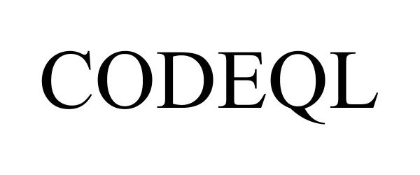

Github发布CodeQL后，一直保持着关注，从17年就有类似的想法在尝试，在CodeQL中有很多不谋而合的点，查询语句刚上手虽然有些别扭，稍微适应了下感觉还好，值得好好学习一下

接下来看一下如何发现Java Deserialization Vulnerabilities。
攻击者在Java应用 deserialization时注入不可信数据进而可以执行任意代码。
java.io.ObjectInputStream中的 readObject是个危险方法。常见的用法如下：
ObjectInputStream ois = new ObjectInputStream(input);
MyObject obj = (MyObject)ois.readObject();
readObject方法的作用是从数据流中读取并返回该对象。那么我们都知道当构造序列化数据时插入恶意代码，则可以在 deserialization时产生非预期结果，甚至可以执行任意代码。
使用CodeQL发现不安全的deserialization
我们可以使用CodeQL来发现 deserialization漏洞，当然我们首先找到 deserialization进行的位置，然后需要跟踪不可信的数据是否可以到达 deserialization调用方法。
首选我们编写一个查询语句去寻找 readObject调用。
import java
from MethodAccess call, Method readobject
where
call.getMethod() = readobject and
readobject.hasName("readObject") and
readobject.getDeclaringType().hasQualifiedName("java.io", "ObjectInputStream")
select call
这段codeql代码的意思是寻找名称为 readObject且类型为 java.io.ObjectInputStream的方法。
上文这段代码会返回很多结果，其中大部分都是安全的。因此我们要定位到那些可读取脏数据的调用上。进行污点跟踪主要靠 RemoteFlowSource和 flowsTo。RemoteFlowSource的作用是发现可以由用户控制的输入点，例如http请求参数。谓词 flowsTo的作用是监控数据流是否从 source到达 sink。
首先将查询重构为一个类，来定义我们感兴趣的 sink。也就是 readObject的调用集合，这里是脏数据流入的地方。
class UnsafeDeserializationSink extends Expr {
UnsafeDeserializationSink() {
exists(MethodAccess call, Method readobject |
call.getMethod() = readobject and
readobject.hasName("readObject") and
readobject.getDeclaringType().hasQualifiedName("java.io", "ObjectInputStream") and
this = call.getQualifier() )
}
}
接下来我们定义 sink， source定义于 RemoteFlowSource，完整的查询语句如下。
import java
import semmle.code.java.security.DataFlow
class UnsafeDeserializationSink extends Expr {
UnsafeDeserializationSink() {
exists(MethodAccess call, Method readobject |
call.getMethod() = readobject and
readobject.hasName("readObject") and
readobject.getDeclaringType().hasQualifiedName("java.io", "ObjectInputStream") and
this = call.getQualifier() )
}
}
from RemoteFlowSource source, UnsafeDeserializationSink sink
where source.flowsTo(sink)
select source, sink
当然，上边只查询了 java.io.ObjectInputStream.readObject这一个方法，其它反序列化框架也有类似的漏洞，例如Kryo、XmlDecoder、XStream、SnakeYaml等。
完整的反序列化漏洞查询语句如下。
import java
import semmle.code.java.dataflow.FlowSources
import semmle.code.java.security.UnsafeDeserialization
import DataFlow::PathGraph
class UnsafeDeserializationConfig extends TaintTracking::Configuration {
UnsafeDeserializationConfig() { this = "UnsafeDeserializationConfig" }
override predicate isSource(DataFlow::Node source) { source instanceof RemoteFlowSource }
override predicate isSink(DataFlow::Node sink) { sink instanceof UnsafeDeserializationSink }
}
from DataFlow::PathNode source, DataFlow::PathNode sink, UnsafeDeserializationConfig conf
where conf.hasFlowPath(source, sink)
select sink.getNode().(UnsafeDeserializationSink).getMethodAccess(), source, sink, "Unsafe deserialization of $@.", source.getNode(), "user input"
参考链接：https://lgtm.com/rules/1823453799/ https://securitylab.github.com/research/insecure-deserialization
本文由 蓝骨
创作，采用 知识共享署名4.0 国际许可协议进行许可
本站文章除注明转载/出处外，均为本站原创或翻译，转载前请务必署名
最后编辑时间为: 2020-08-24T10:36:25+08:00